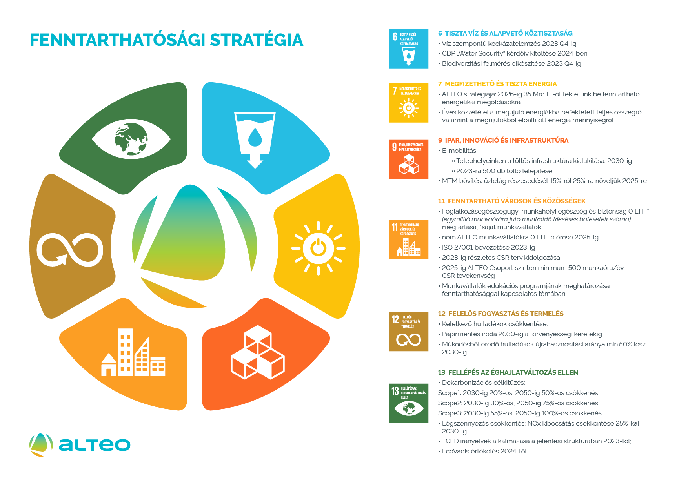

Fenntarthatósági Célok
A fenntarthatósági célok olyan hosszú távú törekvések, melyek arra irányulnak, hogy biztosítsák a jelenlegi és jövőbeli generációk számára az élhető környezetet, valamint a társadalmi és gazdasági jólétet. Ezeket a célokat általában három fő területen határozzák meg: környezetvédelem, társadalmi igazságosság és gazdasági fejlődés. Az alábbiakban részletesen bemutatom ezeket a célokat:
Környezetvédelem:
A fenntarthatósági célok középpontjában az áll a törekvés, hogy
megőrizzük és fenntartsuk a Föld természeti erőforrásait, beleértve a
levegőt, a vizet, a talajt és a biodiverzitást. Csökkenteni kell a káros
anyagok kibocsátását, a szén-dioxid kibocsátást és más üvegházhatású
gázokat, hogy csökkentsük a globális felmelegedést és a klímaváltozás
negatív hatásait. Fontos cél a megújuló energiaforrások használatának
növelése, az energiahatékonyság javítása és az ökológiai lábnyom
csökkentése.
Társadalmi igazságosság:
A társadalmi fenntarthatóság célja az egyenlőség és az inkluzív fejlődés
előmozdítása, hogy minden ember méltósággal élhessen. A fenntarthatósági
célok között szerepel a szegénység csökkentése, az oktatáshoz való
hozzáférés javítása, az egészségügyi ellátás biztosítása és az
esélyegyenlőség elősegítése minden társadalmi rétegben. Fontos az emberi
jogok tiszteletben tartása, az igazságosság és az esélyegyenlőség
előmozdítása.
Gazdasági fejlődés:
A fenntartható gazdasági fejlődés olyan gazdasági
rendszer kialakítását célozza meg, amely fenntartható módon használja fel
a természeti erőforrásokat, és tiszteletben tartja a társadalmi és
környezeti hatásokat. A fenntartható gazdaság magában foglalja a
környezetbarát technológiák fejlesztését és alkalmazását, valamint a
környezeti és társadalmi szempontokat figyelembe vevő üzleti
gyakorlatokat. Az elosztó és körkörös gazdaság elveinek előmozdítása is
fontos cél, hogy minimalizáljuk a hulladékot és maximalizáljuk az
erőforrások újrahasznosítását. A fenntarthatósági célok összefonódnak
egymással, és egy komplex rendszert alkotnak, amelyekre a
környezetvédelem, a társadalmi igazságosság és a gazdasági fejlődés
egyaránt hatással van. Az egyensúly és a harmonikus fejlődés elérése
érdekében a kormányoknak, a vállalatoknak, a civil szervezeteknek és az
egyéneknek egyaránt együtt kell működniük és intézkedéseket kell hozniuk a
fenntarthatóság előmozdítása érdekében.
